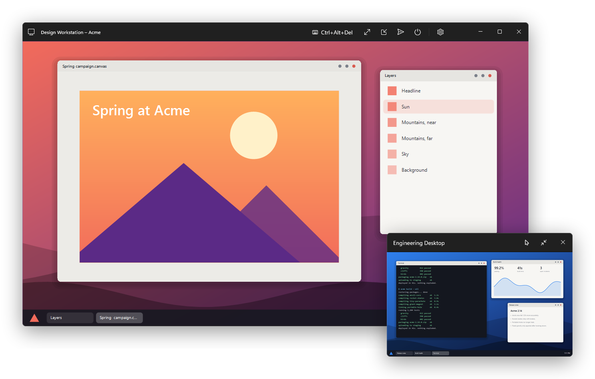
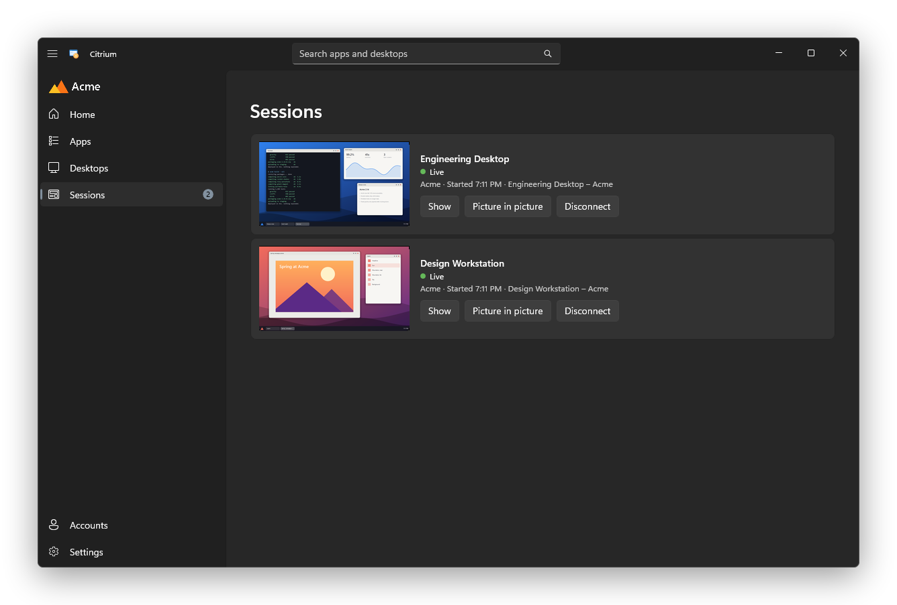
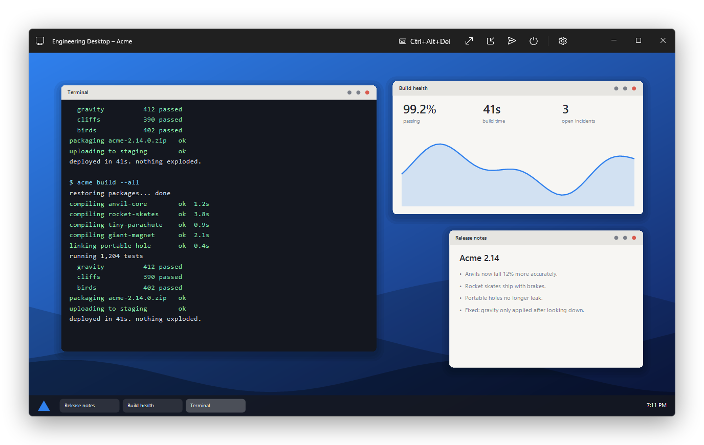
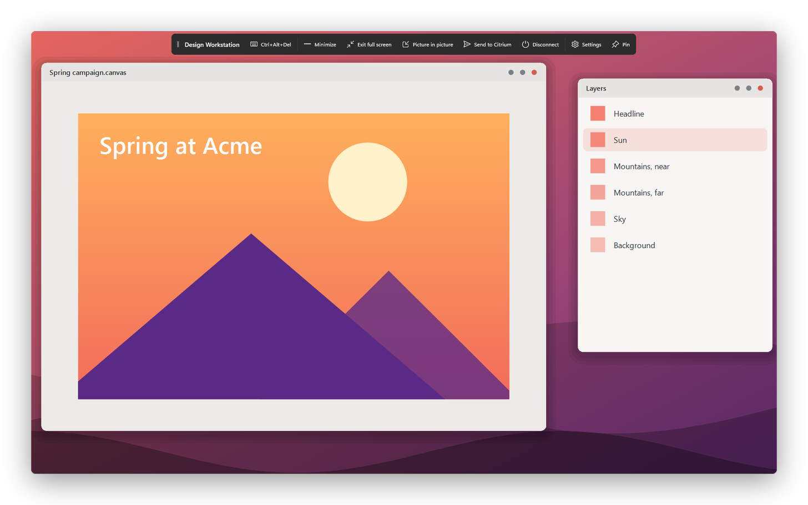

Picture in picture
Shows a live view of a desktop in a small window on top of everything else. It can open automatically when you switch away. Scroll over it to change its opacity, or turn on ghost mode to click through it.

Sessions
Lists every running session with a live preview, including ones started outside Citrium. If a desktop disconnects, Citrium notifies you and you can reconnect in one click.

Desktop window
Each desktop remembers its size and position. You can change scaling, audio and other settings from the title bar while connected.

Full screen
The toolbar stays hidden until you rest the pointer at the edge of the screen. You can dock it to any edge or float it, and move the desktop to another screen.

Also
- Add several accounts and search all of them with Ctrl+E.
- Pin favorites, and open them from the tray, the taskbar's jump list or a desktop shortcut.
- Open a desktop automatically when Citrium starts with Windows.
- Home shows your apps as tiles that shrink and rearrange as you add more.
Setup
- Download the installer from Releases and run it. It doesn't need administrator rights. Windows may show a warning because the installer isn't code signed yet.
- In Citrium, open Settings and select Install Citrix Workspace, then restart Citrium. If you don't see the button, it's already installed.
- Open Accounts and add your Citrix StoreFront store or Citrix Gateway address.